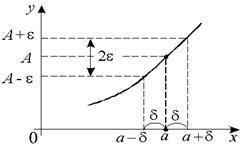

11.1.2 Определение предела по Коши
Число  называется пределом
функции
называется пределом
функции  в точке
в точке  , если .
, если .
называется пределом
функции в точке , если .
Таким образом, для любой  –
окрестности точки можно найти
–
окрестности точки можно найти  -окрестность точки , такую, что все значения функции для
-окрестность точки , такую, что все значения функции для
 из –
окрестности точки попадут в – окрестность точки .
из –
окрестности точки попадут в – окрестность точки .
–
окрестности точки можно найти -окрестность точки , такую, что все значения функции для
из –
окрестности точки попадут в – окрестность точки .Смысл этого утверждения заключается в том, что чем
ближе точка расположена к точке , тем ближе значение  к числу .
к числу .
расположена к точке , тем ближе значение к числу .Определение 11.1.2 сформулировано «на языке эпсилон-дельта»
(иначе определение предела по Коши).